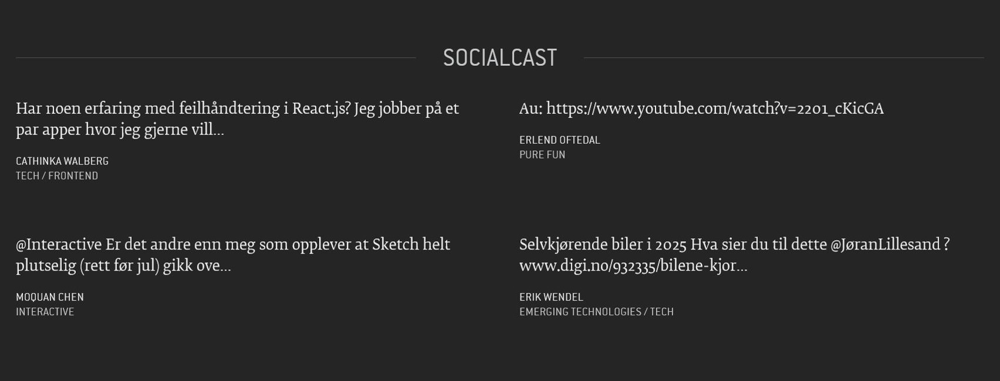

- Hva er min mål?
- Hva skal widgeten gjøre?
- Hva er widgeten oppskrift?
- Hva er widgeten fremgangsmåte?
- Hvordan oppdaterer global widget style and script filer?
- Hvordan samtaler widgeten?
Widget
Ja, Bekk-ere kan!
BEKK Fagdag 6. mars 4. september: 100 lyntaler
med Pedro Alves
BEKK Fagdag 6. mars 4. september: 100 lyntaler

BEKK Fagdag 6. mars 4. september: 100 lyntaler
med Pedro Alves
BEKK Fagdag 6. mars 4. september: 100 lyntaler
Hva skal dere høre i neste 10 minutter!
Hva er min mål?
- Ja, Bekkere kan!
Wha skal widgeten gjøre?

Hva er widgeten oppskrift?
- Controller
..\Controllers\"Navn_Controller" - View
..\Views\"Controller_Navn"\"Action_Navn".cshtml - Widget layout
..\Web\Styles\components\"Widget_Navn" - Widget innhold
..\Web\Scripts\components\"Widget_Navn"
Hva er widgeten fremgangsmåte?
-
Widget layout
Index.less
..\Web\Styles\components\_index.less -
Widget innhold
Main: "Widget_Navn".js
View: "Widget_Navn"View.js
Model: "Widget_Navn"Model.js
Template: "Widget_Navn".hbs
Andre filer "Navn".*
..\Web\Scripts\components\loader.js
document.querySelectorAll("*[data-component]");
..\Controllers\SocialCastController.cs
Controller ...
../Views/SocialCast/Index.cshtml
View ...
..\Web\Scripts\components\socialcast\socialcast.hbs
Template ...
..\Web\Scripts\components\socialcast\socialcast.js
JS ...
..\Web\Scripts\components\socialcast\socialcastView.js
JS ...
..\Bekk.Forside.Web\Web\Styles\components\socialcast\index.less
CSS ...
Hvordan oppdaterer global widget style and script filer?
-
kjører "gulp" kommand
- ..\gulpfile.js fil vil være samtale;
- Det skal bygge hele widgeter i BekkForside prosjekt;
-
..\Content\js\app.bundle.js
..\Content\css\style.bundle.css
Merk: Filene opp skal være oppdatere og de er lokal filene.
-
..\package.json fil
package.json skal fikset avhengighet av require(str).
Det ligger i ..\node_modules\*
Hvordan samtaler widgeten?
- Setter din widget i ..\Views\Home\Index.cshtml
@{
Html.RenderAction("Action_Navn","Controller_Navn");
}
Kan BEKKere
utenfor Forvaltning
lage sine egne widgeter?
Hvor dere finner mer informasjoner
- Tutorial om Widget (Confluence)
- Koden av BekkForside prosjekt (GitHub)
- Eksempler av Widget

BEKK Fagdag 6. mars 4. september: 100 lyntaler